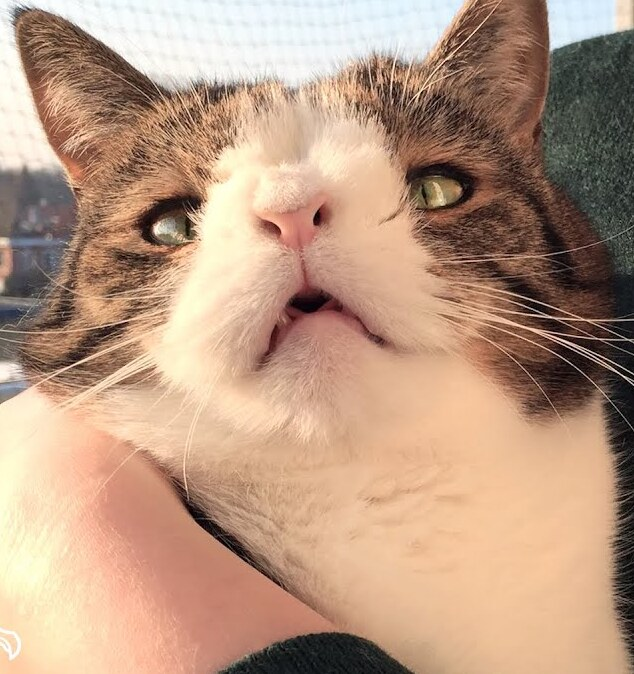

Alright, we've all been in that situation before. You've just gotten yourself your first little guy captured free of charge, but now he's contracted the malice, every cat does after its first few weeks with it's new owner. But because of how often I practice this technique, I've come up with a few amazing ways to feed a malice ridden cat!
An example of a malice ridden kitty shortly after capture
Now, a little bit of preperation is required to begin feeding a malice ridden cat, you'll need a few items.
Now, rightfully so you may be overwhelmed with questions as to why you may neew a few of these items. Lets start with in my opinion the least likely one to be on this list, the sports gear. Now, there is a very simply reason for the sports gear, malice ridden cats are possessed by the spirits of long dead Einherji from Valhalla, most of which were incredibly into the sport "Soccer", a british sport bastardized by the Ameriacns a few hundred years after they gained independence. Now, these Einherji spirits love a good game of soccer, and will only agree to leave the spirit of the malice ridden kitty if you beat them in a game, this can prove fatal to the cat however as the spirit will not allow it eat until the game is partook, so you best hurry.
Depicted are two individuals, a humanoid Einherji spirit and a human battling in a game of soccer to ward off the malice.
These Einherji may play themselves as big and tough, unbeatable soccer players, but they only have about 4 play styles which will easily be able to be guessed after their first few moves in the game, each having a fairly obvious counter which I will showcase to assist in your battle to save the cat.
| Einherji Technique | Techniques Tell | Counter Technique |
|---|---|---|
| Pincer Strike | Einherji will try to circle you | Charge towards Einherji, play aggresive |
| Dirty Dog | Einherji will run at you and attempt to trip you | Simply run away, jump if they get too close |
| ???? | Yet to come up with a name, Einherji will roll towards you rapidly | You're unlucky, I've yet to come up with a counter for this technique, give up. |
| Gutter Kick | The Einherji will repeatedly slide towards the ball. | Run directly at the Einherji, they have no counter. |
Above is a helpful video on tricks for battling the Einherji
my githube :DDD